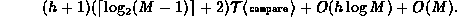

Data Structures and Algorithms
with Object-Oriented Design Patterns in Java
Data Structures and Algorithms
with Object-Oriented Design Patterns in Java
The method for inserting items in an M-way search tree
follows directly from the algorithm for insertion in a binary search tree given
in Section  .
The added wrinkle in an M-way tree is that an internal node
may contain between 1 and M-1 keys
whereas an internal node in a binary tree must contain exactly one key.
.
The added wrinkle in an M-way tree is that an internal node
may contain between 1 and M-1 keys
whereas an internal node in a binary tree must contain exactly one key.
Program gives the implementation
of the insert method of the MWayTree class.
This method takes as its argument the object
to be inserted into the search tree.
Program: MWayTree class insert method.
The general algorithm for insertion is to search for the item to be inserted and then to insert it at the point where the search terminates. If the search terminates at an external node, that node is transformed to an internal node of the form , where x is the key just inserted (lines 10-16).
If the search terminates at an internal node, we insert the new item into the sorted list of keys at the appropriate offset. Inserting the key x in the array of keys moves all the keys larger than x and the associated subtrees to the right one position (lines 23-33). The hole in the list of subtrees is filled with an empty tree (line 31).
The preceding section gives the running time for a search in an M-way search tree as

where h is the height of the tree.
The additional time required to insert the item into the node
once the correct node has been located is O(M).
Therefore, the total running time for the
insert algorithm given in Program is

 Copyright © 1998 by Bruno R. Preiss, P.Eng. All rights reserved.
Copyright © 1998 by Bruno R. Preiss, P.Eng. All rights reserved.